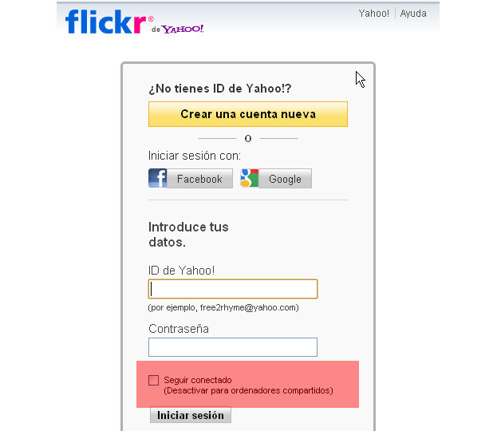
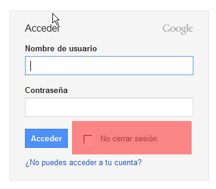
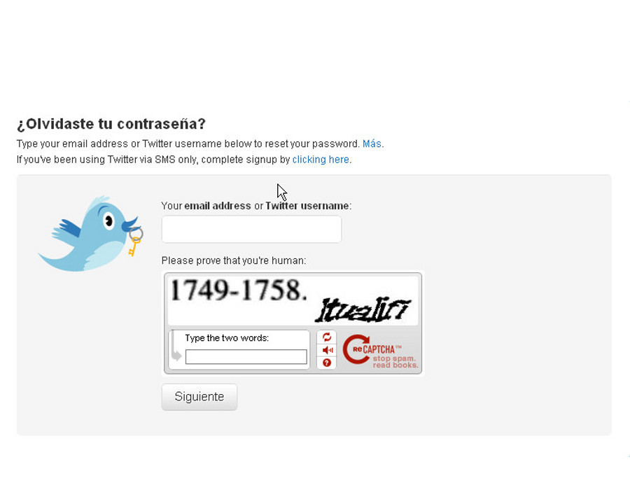
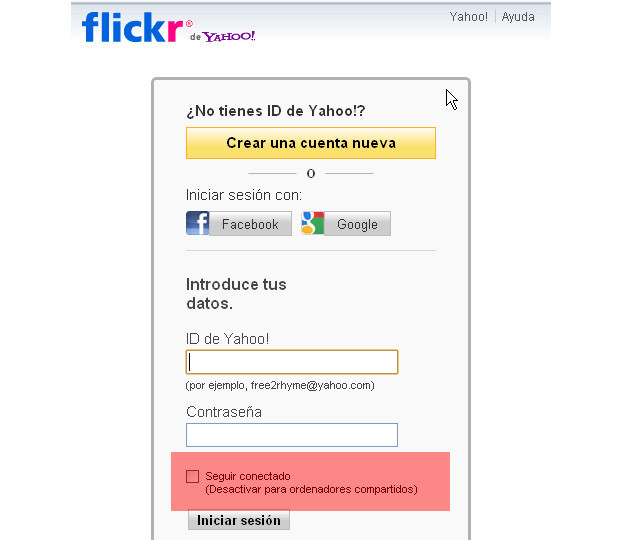
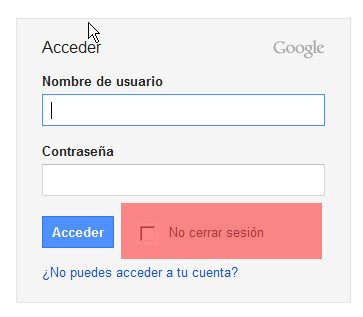
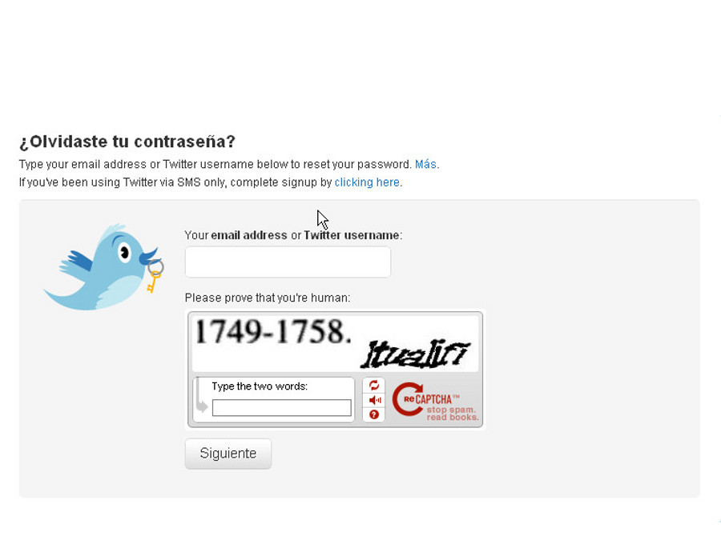

Universitat per a Majors
Blogs
Nuestro espacio personal en la web
Apreta la tecla → para avanzar.

Un blog, en español también bitácora , es un sitio web periódicamente actualizado que recopila cronológicamente textos o artículos de uno o varios autores, apareciendo primero el más reciente, donde el autor conserva siempre la libertad de dejar publicado lo que crea pertinente.
En resumen: La manera más sencilla de expresar nuestra opinión y llegar a millones de personas.

Cambia de foto con las teclas: ↑ y ↓
Leer de manera habitual los blogs de nuestro interés puede ser una fuente de información provechosa y satisfactoria. Veamos sus ventajas:
Problema: ¿Cómo encontramos los blogs que nos gustan? Tendremos que buscarlos.
Cambia de foto con las teclas: ↑ y ↓
Todos tenemos algo que trasmitir, el poder publicarlo y hacerlo llegar a millones de personas es un logro del que tenemos que sentirnos orgullosos, y sobre todo, aprovecharlo.
Para publicar en un blog:
Cambia de foto con las teclas: ↑ y ↓
Para hacer uso de funciones avanzadas de una web (comentar, publicar contenidos, acceder a información personalizada) necesitamos registrarnos en su sistema.
Cambia de foto con las teclas: ↑ y ↓
Darse de alta en un sistema externo implica tener otro usuario/contraseña más que deberemos guardar para cuando queramos entrar a esa página web.
¿Cómo podemos gestionar tantos usuarios/contraseñas?
Cambia de foto con las teclas: ↑ y ↓
¿Qué hacemos si perdemos la contraseña de nuestro usuario? Todas las webs tienen un mecanismo de recuperación de contraseña.
 





Cambia de foto con las teclas: ↑ y ↓